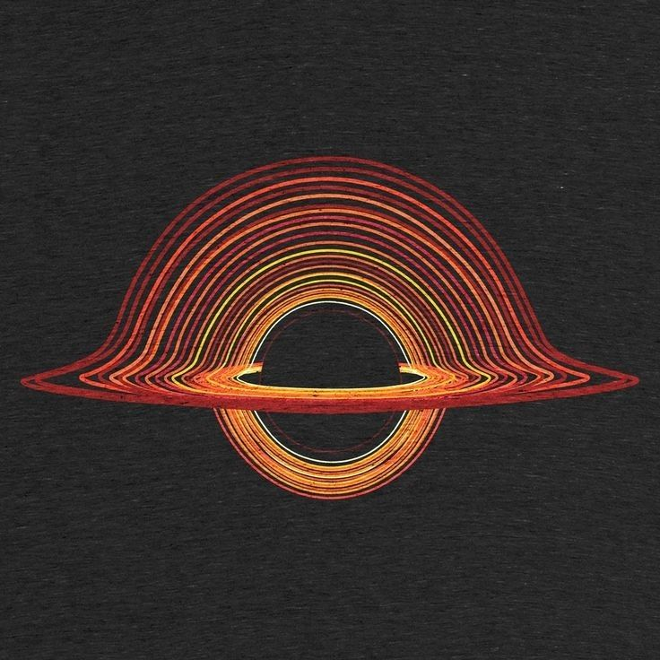
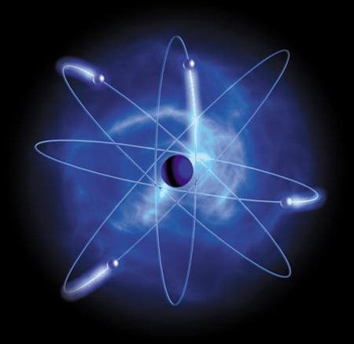

BCode
providing the best project experience
where science meets imagination! This collection highlights my experiences in exploring the vast mysteries of space, from the formation of planets to the behavior of subatomic particles.
Unlocking the Secrets of the Universe
Particle Accelerators
Particle accelerators and high-energy physics allow us to probe the most fundamental aspects of naturehaping the cosmos. By recreating the extreme conditions of the early universe
Use electromagnetic fields to speed up and collide particles, allowing scientists to study physics at extremely high energies.
Particle Accelerators
Future accelerators will push the boundaries of high-energy physics and potentially discover new forces or particles.
The Future of High-Energy
The quantum world defies classical logic, allowing for phenomena like being in two places at once (superposition) and faster-than-light communication of information (entanglement).

Worlds Beyond Our Own
Cosmic Wonders: The Fabric of the Universe
Planets, moons, and exoplanets hold the key to understanding the diversity of celestial bodies and the possibility of extraterrestrial life.
Pushing the Boundaries of Knowledge
The universe is an intricate web of galaxies, nebulae, and cosmic phenomena that stretch across billions of light-years.
The unseen forces driving the universe’s expansion.
to navigate throug quantam mechanics or physics we really need to undo what we expect in or learn in the past ,if you think you understand this you'll never get this ~someone sayed
The Strangeness of Reality

Superposition
When not observed, particles spread out as waves, capable of interfering with themselves (like ripples on a pond). This is demonstrated in the Double-Slit Experiment, where electrons, when unobserved, form an interference pattern on a screen, behaving like waves.
Entanglement
When observed or measured, the same electron acts like a tiny, localized particle, hitting a single spot on the detector instead of spreading out. This suggests that the mere act of measurement collapses its wave-like nature into a single definite state.
Matter and energy do not exist in fixed states
Would you like me to add real-world applications for these concepts?
Full Name
email address
your message